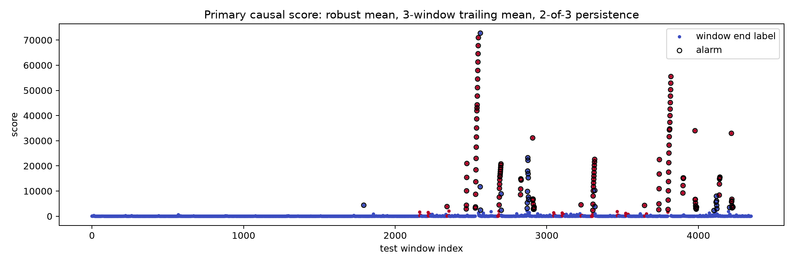

Leakage-safe GRU-AE evaluation — IndPenSim
robust_max_val_max: maximum normal validation score.
{
"method": "robust_max_val_max",
"threshold": 2241.683837890625,
"threshold_policy": "maximum normal validation score",
"score": "maximum training-robust-standardized squared reconstruction error at window end",
"window_size": 60,
"stride": 5
}| method | threshold | validation_alarm_rate | roc_auc | average_precision | precision | recall | f1 | fpr | event_recall | normal_batch_false_alarm_rate |
|---|---|---|---|---|---|---|---|---|---|---|
| end_mse_val_q99_5 | 0.00030146067729219794 | 0.0051837888784165885 | 0.9238910202723212 | 0.5767969373906136 | 0.5440613026819924 | 0.5298507462686567 | 0.5368620037807184 | 0.029159519725557463 | 1.0 | 0.3 |
| end_mse_val_max | 0.0011522978311404586 | 0.0 | 0.9238910202723212 | 0.5767969373906136 | 0.7055555555555556 | 0.47388059701492535 | 0.5669642857142857 | 0.012987012987012988 | 0.7 | 0.1 |
| end_mse_causalmean3_val_q99_5 | 0.00024242766085080802 | 0.0051837888784165885 | 0.9190515201498022 | 0.5179367960753337 | 0.436241610738255 | 0.48507462686567165 | 0.45936395759717313 | 0.0411663807890223 | 1.0 | 0.1 |
| end_mse_causalmean3_val_max | 0.0006404368905350566 | 0.0 | 0.9190515201498022 | 0.5179367960753337 | 0.52 | 0.43656716417910446 | 0.4746450304259635 | 0.02646410193580005 | 0.7 | 0.1 |
| robust_mean_val_q99_5 | 71.1800308227539 | 0.0051837888784165885 | 0.9580299312065013 | 0.7013588558892493 | 0.6108786610878661 | 0.5447761194029851 | 0.5759368836291914 | 0.02278853222249449 | 1.0 | 0.3 |
| robust_mean_val_max | 358.7461242675781 | 0.0 | 0.9580299312065013 | 0.7013588558892493 | 0.8125 | 0.48507462686567165 | 0.6074766355140186 | 0.0073511394266111245 | 1.0 | 0.1 |
| robust_mean_causalmean3_val_q99_5 | 55.67082595825195 | 0.0051837888784165885 | 0.9493749702845733 | 0.628776492689924 | 0.45714285714285713 | 0.5373134328358209 | 0.4939965694682676 | 0.04190149473168341 | 1.0 | 0.1 |
| robust_mean_causalmean3_val_max | 163.2867431640625 | 0.0 | 0.9493749702845733 | 0.628776492689924 | 0.5893719806763285 | 0.4552238805970149 | 0.5136842105263157 | 0.020828228375398185 | 1.0 | 0.1 |
| robust_max_val_q99_5 | 318.05255126953125 | 0.0051837888784165885 | 0.9681843782801258 | 0.7298987771545442 | 0.6299212598425197 | 0.5970149253731343 | 0.6130268199233716 | 0.023033570203381523 | 1.0 | 0.2 |
| robust_max_val_max | 2241.683837890625 | 0.0 | 0.9681843782801258 | 0.7298987771545442 | 0.8366013071895425 | 0.47761194029850745 | 0.6080760095011877 | 0.006125949522175937 | 1.0 | 0.1 |
| robust_max_causalmean3_val_q99_5 | 243.73538208007812 | 0.0051837888784165885 | 0.9590292838673575 | 0.6603580072200699 | 0.5227272727272727 | 0.6865671641791045 | 0.5935483870967742 | 0.0411663807890223 | 1.0 | 0.1 |
| robust_max_causalmean3_val_max | 870.0205688476562 | 0.0 | 0.9590292838673575 | 0.6603580072200699 | 0.6212121212121212 | 0.458955223880597 | 0.5278969957081545 | 0.018377848566527813 | 1.0 | 0.1 |
| batch | faulty | fault_start | detected | detection_delay | alarm_windows | pre_fault_alarm |
|---|---|---|---|---|---|---|
| 81 | 0 | nan | 0 | nan | 0 | 0 |
| 82 | 0 | nan | 0 | nan | 0 | 0 |
| 83 | 0 | nan | 0 | nan | 0 | 0 |
| 84 | 0 | nan | 0 | nan | 0 | 0 |
| 85 | 0 | nan | 0 | nan | 0 | 0 |
| 86 | 0 | nan | 0 | nan | 0 | 0 |
| 87 | 0 | nan | 0 | nan | 0 | 0 |
| 88 | 0 | nan | 0 | nan | 0 | 0 |
| 89 | 0 | nan | 0 | nan | 1 | 1 |
| 90 | 0 | nan | 0 | nan | 0 | 0 |
| 91 | 1 | 20.0 | 1 | 180.0 | 1 | 0 |
| 92 | 1 | 80.0 | 1 | 0.0 | 29 | 0 |
| 93 | 1 | 70.0 | 1 | 8.0 | 15 | 0 |
| 94 | 1 | 20.0 | 1 | 0.0 | 26 | 0 |
| 95 | 1 | 20.0 | 1 | 180.0 | 1 | 0 |
| 96 | 1 | 70.0 | 1 | 8.0 | 15 | 0 |
| 97 | 1 | 20.0 | 1 | 180.0 | 1 | 0 |
| 98 | 1 | 80.0 | 1 | 0.0 | 25 | 0 |
| 99 | 1 | 20.0 | 1 | 0.0 | 22 | 0 |
| 100 | 1 | 20.0 | 1 | 0.0 | 17 | 0 |

Validation has no faults. Do not select methods, sensor weights, or alarm persistence by the test metrics shown here.